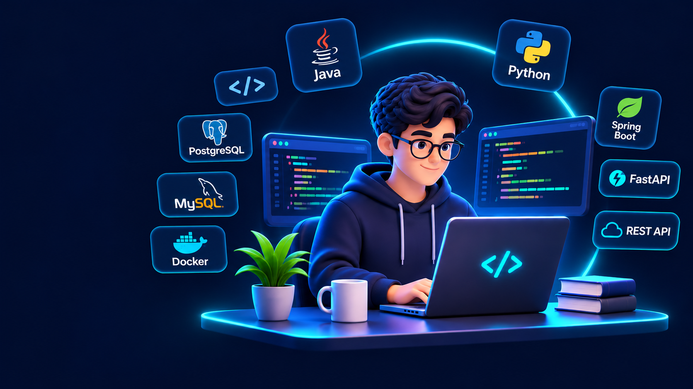

01
Languages
Java, Python, JavaScript and SQL.
HELLO, I’M
Aspiring Full Stack Java Developer
I am a Computer Science Engineering graduate passionate about building scalable web applications and solving real-world problems through technology.

01 / ABOUT
I am a Computer Science and Engineering graduate with a strong interest in Full Stack Development. I enjoy developing practical applications, designing REST APIs and working with databases. I have hands-on experience with Python development and backend technologies, and I am continuously improving my Java Full Stack development skills.
02 / EXPERTISE
01
Java, Python, JavaScript and SQL.
02
Practical experience building APIs and services.
03
Databases and the tools that support reliable delivery.
03 / SELECTED WORK
FEATURED PROJECT
Workforce and financial management application supporting employee records, attendance, leave, payroll, payslips, and reporting.
Read case study →04 / EXPERIENCE
Fobes Skill Itech Pvt Ltd
DVein Innovation Pvt. Ltd.
05 / EDUCATION
2022 — 2026
Computer Science and Engineering
Anand Institute of Higher Technology
HSC: 69% | SSLC: 62%
8.2CGPA
06 / CERTIFICATIONS
07 / CONTACT
I’m always interested in learning, collaborating and exploring new software development opportunities.